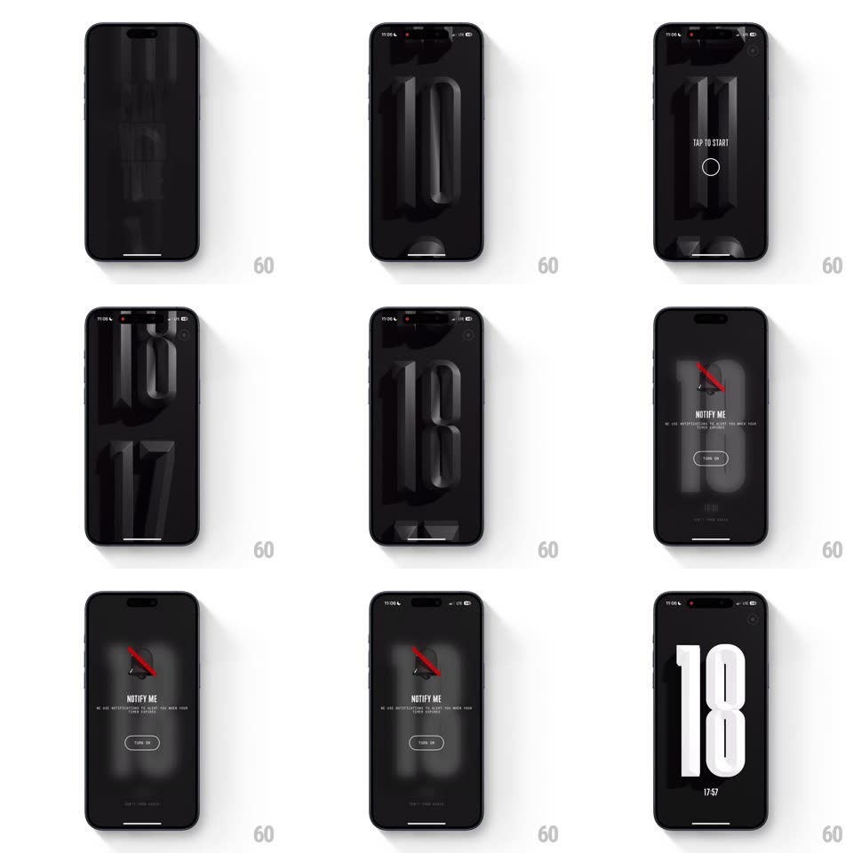

Media
Frame-by-frame

Rebuild this interaction 1:1: (Not Boring) Timer's setting drum - after a "PLAY WITH TIME" start card, hours/minutes set via a 3D cylinder of deeply extruded monochrome digits you spin with momentum, with "TAP TO START", then a notify-permission beat and a giant countdown display.

Rebuild this interaction 1:1: (Not Boring) Timer's setting drum - after a "PLAY WITH TIME" start card, hours/minutes set via a 3D cylinder of deeply extruded monochrome digits you spin with momentum, with "TAP TO START", then a notify-permission beat and a giant countdown display. ## Integration Integration: stack-agnostic spec - springs given as stiffness/damping, timed motions as duration + curve; map every value to your framework and animation library of choice. ## Scene Black throughout. Start card: "PLAY WITH TIME" in tall condensed type. Setting view: a full-screen drum of extruded digits curving away at top and bottom (cylinder shading), the center row crisp, "TAP TO START" small at the bottom. Notify screen: a bell with a red slash, "NOTIFY ME", "TURN ON" pill. Countdown: one gigantic white "18" with the date beneath. ## Motion spec Pattern: 3D drum scroll with momentum and snap. - Drag the drum: digits rotate around the cylinder's x-axis 1:1 with the finger, depth-shaded (center bright, poles fading to black) with real perspective foreshortening. - Fling: momentum with deceleration ~0.92/frame, then snap to the nearest digit (spring ~280/16 - the drum "clunks" into place with a subtle scale bump and a tick haptic per passing digit). - The selected digit brightens and extrudes deepest; neighbors recede - focus is done with light, not boxes. - TAP TO START: the drum's digits scatter off-axis (rotate + fade, 300ms) and the notify sheet rises (spring ~340/22). - Countdown entry: the giant digits scale in from 1.3 (spring ~300/14) and tick each second with a quick flip (top half folds 120ms) - a split-flap nod. ## Calibration - The cylinder must shade continuously - faceted steps would break the drum illusion. - Snap is non-negotiable - the drum never rests between digits. ## Reduced motion Drum scrolls flat without rotation or momentum; countdown changes without flip. ## Don't miss - Extrusion is the identity: digits are carved blocks, their shadows doing half the work. - Haptics per digit - you should be able to set this with your eyes closed.